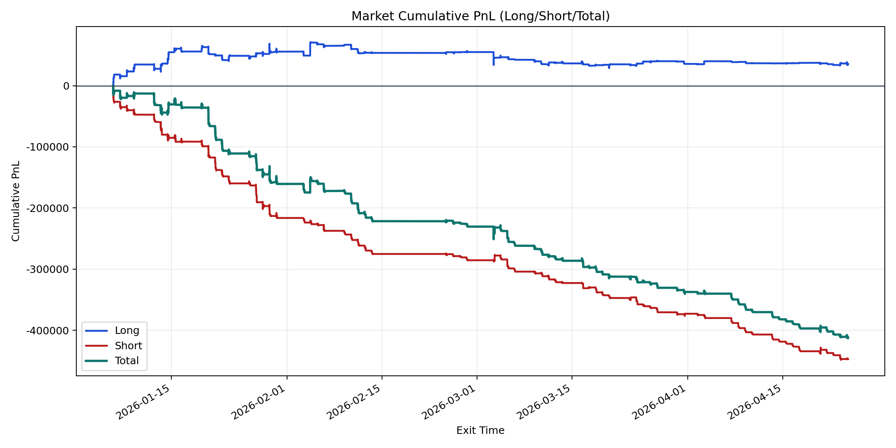
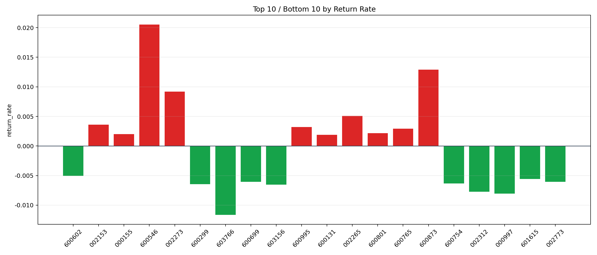

| repo_root | /home/haoranyou/data/output/dynamic_AUM_TAKER_index500 |
|---|---|
| period_months | 12 |
| period_label | 2026-01-06_to_2026-04-24 |
| start_time | 2026-01-06 09:54:53 |
| end_time | 2026-04-24 14:45:22 |
| n_trades | 25901 |
| n_symbols | 148 |
| total_pnl | -411386.8491000021 |
| long_total_pnl | 35664.05045000189 |
| short_total_pnl | -447050.899550004 |
| total_entry_notional | 467891419.0 |
| long_entry_notional | 146189606.0 |
| short_entry_notional | 321701812.99999994 |
| total_return_rate | -0.0008792357209269574 |
| long_return_rate | 0.00024395749756656358 |
| short_return_rate | -0.0013896437057070738 |
| top_symbols_by_return | ["600546", "600873", "002273", "002265", "002153", "600995", "600765", "600801", "000155", "600131"] |
| bottom_symbols_by_return | ["603766", "000997", "002312", "603156", "600299", "600754", "600699", "002773", "601615", "600602"] |

